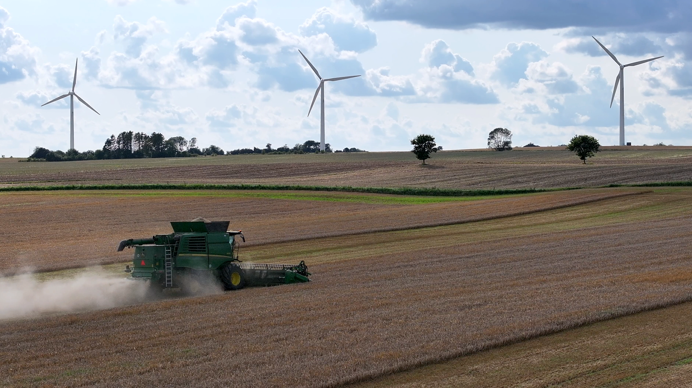

Velkommen til Blæsbjerg Energipark et inspirerende bæredygtighedsprojekt med dybe rødder i lokalhistorien og en visionær fremtid for grøn energi. Historien begyndte, da Blæsbjerg Vindmøllelaug pionerede med tre små møller, der banebrydende skabte et fundament for forandring. I år 2000 blev disse møller erstattet af tre moderne 1 MW vindmøller, som siden da har stået som stolte symboler på vores engagement i bæredygtig energiproduktion. Med en imponerende produktion på 150 millioner kWh har vi taget skridtet mod en renere fremtid og sat kursen mod nye horisonter.
Men vores stolthed rækker ud over blot teknologien. I hjertet af vores initiativ finder du en mangfoldig og dedikeret arbejdsgruppe, sammensat af naboer, lokale virksomheder, vindmølleejere og lodsejere. Sammen stræber vi efter at præsentere et visionært forslag til Hedensted Kommune om et nyt energifællesskab, der vil udgøre fundamentet for en bæredygtig fremtid på Blæsbjerg.
Vores projekt hviler på fire bærende søjler, der former grundstenene i Blæsbjerg Energipark:
Materialet som er fremsendt til Hedensted Kommune open-call kan hentes her
| Dato | Sted | Beskrivelse | Materiale |
|---|---|---|---|
| 20-09-2023 19:00 | Vrigsted Hus | Borgermøde for naboer inden for en radius af 900 meter | Præsentation |
| 11-10-2023 19:00 | Sognegården, Barrit | Borgermøde for naboer |
| Sanne Østergaard Lhombrevej 1, 7150 Barrit |
Just Kristensen Sanatorievej 8, 7140 Stouby |
| Sandra Hjulskov Skulsballevej 2, 7150 Barrit |
Morten Vadstrup Skulsballevej 4, 7150 Barrit |
| Poul Laursen Hornsyldvej 10, 7140 Stouby |
Jørgen Krebs Randvej 8, 7150 Barrit |
| Michael Holmgaard Kristensen Ørnsvigvej 6, 7150 Barrit |